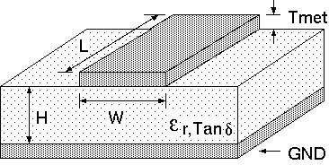

NOTE: mcalc is considered to be obsolete. While mcalc has enjoyed considerably more popularity than I ever imagined when I first released it, I am no longer actively maintaining it. This page will remain here but will probably not be updated. Users are encouraged to try out wcalc which is also an open source tool. wcalc is the replacement for mcalc and is where my efforts in this area are focused. Besides offering the same online microstrip calculations that this tool has, wcalc supports many other structures besides microstrip and many other ways to access the tool besides a web front end.
Any and all comments are welcome. Please let me know if this page is useful to you! User responses will help motivate me to maintain and improve this page. User contributed bug fixes are the most useful!
This calculator provides accurate microstrip transmission line analysis and synthesis. A cross-section of a microstrip transmission line is shown below. The electrical parameters may be determined from specified physical parameters, or the physical parameters required to meet a given set of electrical parameters may be found.

Go to the calculator section.
Return to the top.
In analysis mode, the physical width, W, and length, L, of the transmission line are entered and the program calculates the resulting effective dielectric constant, Keff, the characteristic impedance, Z0, the electrical length, and the loss of the line.
In synthesis mode, the desired characteristic impedance and electrical length are entered and the program calculates the required width and length for the transmission line.
The substrate characteristics and operating frequency must be specified for both analysis and synthesis.
Go to the calculator section.
Return to the top.
| Parameter | Description | Units |
| Er | Relative permittivity of the substrate. | - |
| H | Substrate dielectric thickness. | {Phys. Units} |
| Tmet |
Metal thickness. This value influences both Z0, and the loss of the line. |
{Phys. Units} |
| Rho |
Metal resistivity relative to copper. This value is only used for loss calculations. |
- |
| Rough |
Metal surface roughness. This is the rms deviation of the conductor surface from a plane. A rough surface increases losses in the line. |
{Phys. Units} rms |
| Tand |
Loss tangent of the dielectric. This value is only used for loss calculations. |
- |
Go to the calculator section.
Return to the top.
The closed form expressions used by this calculator for characteristic impedance and effective dielectric constant are highly optimized and accurate expressions. They offer the ultimate in accuracy without resorting to an iterative numerical solution of Maxwell's Equations for the entire structure. Most calculations will result in better than 1% accuracy. A more detailed accuracy description will be added to this page in the future.
The loss equations include dielectric losses and conductor losses. Please note that radiation losses are not included. The loss values are somewhat less accurate than the characteristic impedance and effective dielectric constant values. It is still believed that the numbers obtained are useful.
The loss equations included here assume that the conductor thickness is at least several skin depths thick. When this assumption is not met, the loss equations are somewhat suspect. When the skin depth is larger than the metal thickness, a dc solution is used for loss calculations. This causes a small discontinuity in the conduction loss vs frequency curve as the skin depth crosses the metal thickness. If anyone has a good reference on better loss calculations in this region, please let me know.
If the conductor thickness is set to 0, only dielectric losses are considered and the metal is assumed to be lossless.
Return to the top.
Return to the top.
E. Hammerstad and O. Jensen, "Accurate Models for Microstrip Computer- Aided Design" IEEE MTT-S, International Symposium Digest, Washington D.C., May 1980, pp. 407-409
M. Kirschning and R. H. Jansen, "Accurate Model for Effective Dielectric Constant of Microstrip with Validity up to Millimetre-Wave Frequencies", Electronics Letters, Vol 18, No. 6, March 18th, 1982, pp 272-273.
Stanislaw Rosloniec, Algorithms For Computer-Aided Design of Linear Microwave Circuits, Archtech House, 1990
E. H. Fooks and R. A. Zakarevicius, Microwave Engineering using Microstrip Circuits, Prentice-Hall, 1990
E. O. Hammerstad, Edited by F. Bekkadal, Microstrip Handbook, ELAB Report No. STF44 A74169, University of Trondheim, 1975.
Return to the top.
If you're wondering why this page insists on sending you cookies, I will tell you. Cookies are used to store the values you have entered into the forms on this page. When you visit this site again, the values you had last time are reloaded into the page. This way, you don't have to re-enter values which you may want to use over and over again (such as the substrate parameters). I know I tend to use the same substrate over and over again.
This is all that is done with cookies on this page. I never see a record of what values you have chosen. If you do not want this page to send you cookies, please check the no cookie option here. This will cause one final cookie to be sent to you (which you must accept for it to work). The next time you load this page, it will see that you do not want new cookies and it will not send new ones.
Return to the top.
Return to the top.
Return to the top.
Return to the top.
| mcalc Copyright and license information |